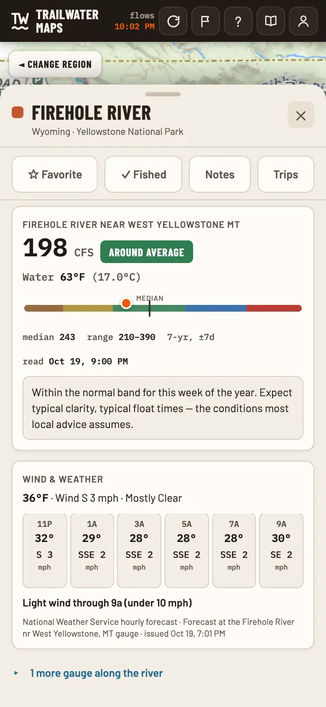
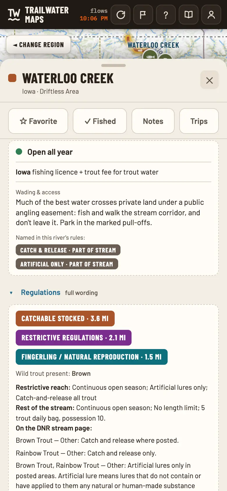
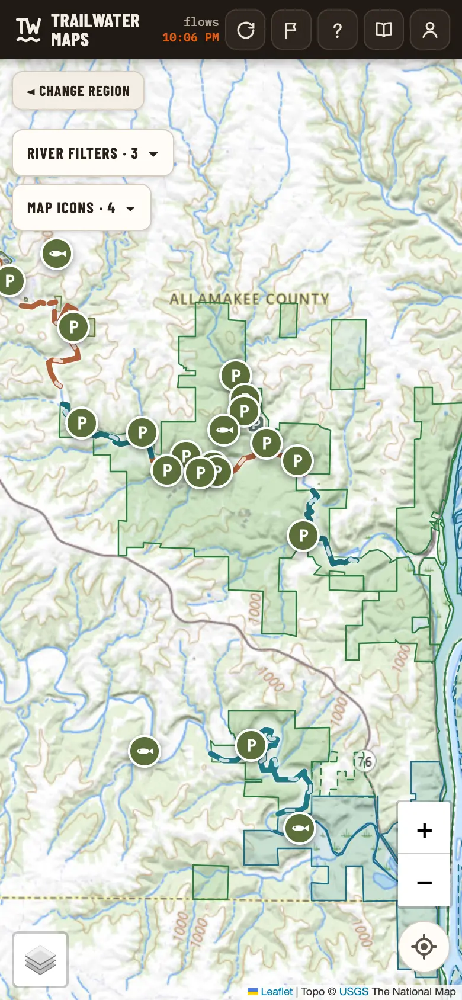
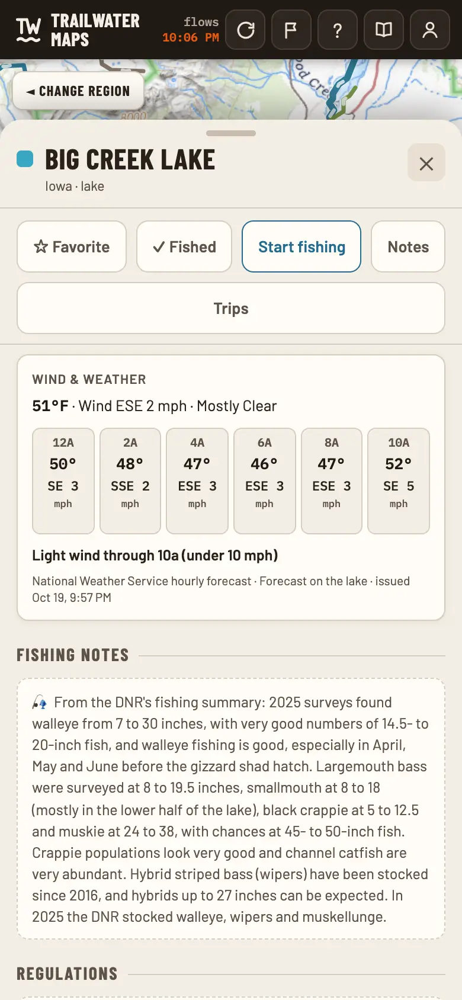
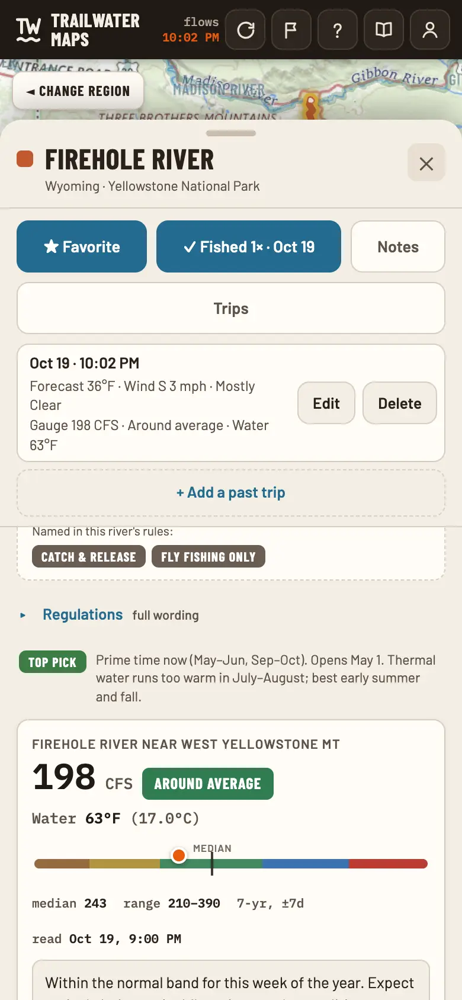

TrailWater newsFlows · rules · access reports
Read the river first.
The app
Then check the water.
1,400+ rivers across 18 states and 28 national parks, with live flows, the rules and access. No account needed.
Open the map




- 1,400+
- Rivers & creeks
- 18
- States
- 28
- National parks
- 800+
- Live gauges